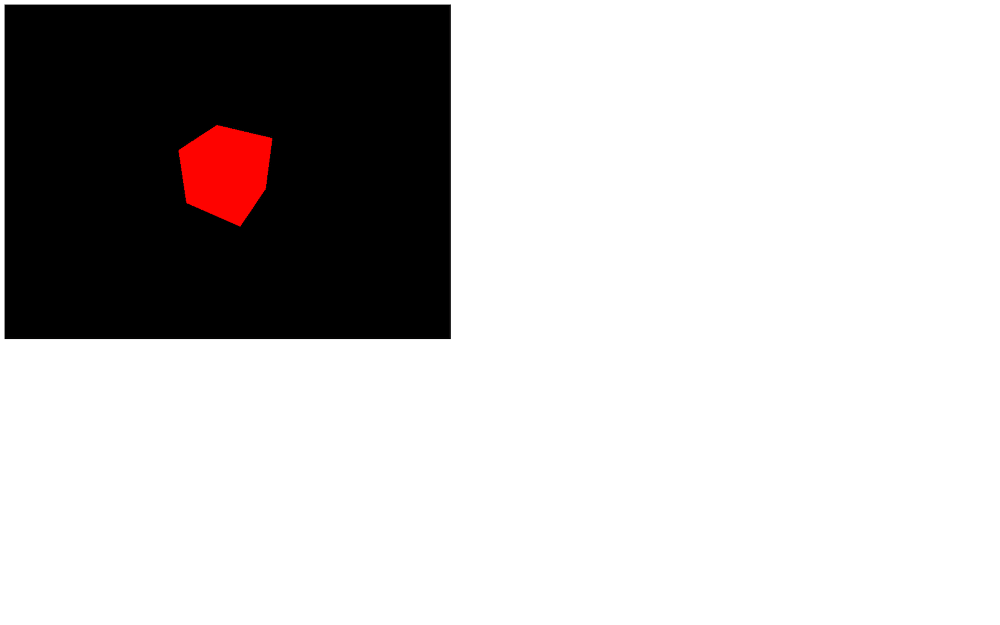
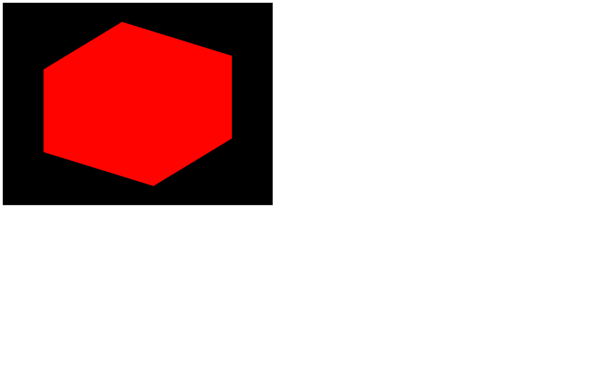
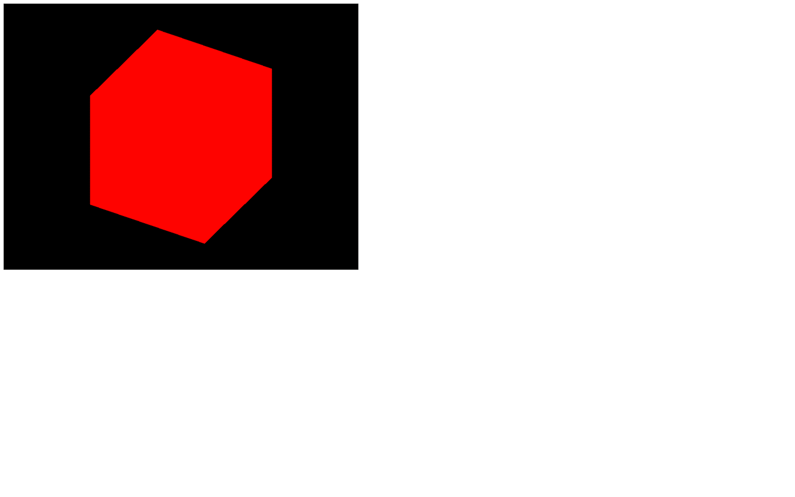

We already created a PerspectiveCamera, but there are other types of cameras, as you can see in the documentation.
The Camera class is what we call an abstract class. You're not supposed to use it directly, but you can inherit from it to have access to common properties and methods. Some of the following classes inherit from the Camera class.
The ArrayCamera is used to render your scene multiple times by using multiple cameras. Each camera will render a specific area of the canvas. You can imagine this looking like old school console multiplayer games where we had to share a split-screen.
The StereoCamera is used to render the scene through two cameras that mimic the eyes in order to create what we call a parallax effect that will lure your brain into thinking that there is depth. You must have the adequate equipment like a VR headset or red and blue glasses to see the result.
The CubeCamera is used to get a render facing each direction (forward, backward, leftward, rightward, upward, and downward) to create a render of the surrounding. You can use it to create an environment map for reflection or a shadow map. We'll talk about those later.
The OrthographicCamera is used to create orthographic renders of your scene without perspective. It's useful if you make an RTS game like Age of Empire. Elements will have the same size on the screen regardless of their distance from the camera.
The PerspectiveCamera is the one we already used and simulated a real-life camera with perspective.
We are going to focus on the OrthographicCamera and the PerspectiveCamera.
As we saw earlier, the PerspectiveCamera class needs some parameters to be instantiated, but we didn't use all the possible parameters. Add the third and fourth parameters:

You should get the same result but let's talk about those parameters in detail.
The first parameter called field of view corresponds to your camera view's vertical amplitude angle in degrees. If you use a small angle, you'll end up with a long scope effect, and if you use a wide-angle, you'll end up with a fish eye effect because, in the end, what the camera sees will be stretched or squeezed to fit the canvas.
As for choosing the right field of view, you'll have to try things out. I usually use a field of view between 45 and 75.
The second parameter is called aspect ratio and corresponds to the width divided by the height. While you might think that it's obviously the canvas width by the canvas height and Three.js should calculate it by itself, it's not always the case if you start using Three.js in very specific ways. But in our case, you can simply use the canvas width and the canvas height.
I recommend saving those values in an object because we are going to need them multiple times:
The third and fourth parameters called near and far, correspond to how close and how far the camera can see. Any object or part of the object closer to the camera than the near value or further away from the camera than the far value will not show up on the render.
You can see that like in those old racing games where you could see the trees pop up in the distance.
While you might be tempted to use very small and very large values like 0.0001 and 9999999 you might end up with a bug called z-fighting where two faces seem to fight for which one will be rendered above the other.
https://twitter.com/FreyaHolmer/status/799602767081848832
https://twitter.com/Snapman_I_Am/status/800567120765616128
Try to use reasonable values and increase those only if you need it. In our case, we can use 0.1 and 100.
While we will not use this type of camera for the rest of the course, it can be useful for specific projects.
The OrthographicCamera differs from the PerspectiveCamera by its lack of perspective, meaning that the objects will have the same size regardless of their distance from the camera.
The parameters you have to provide are very different from the PerspectiveCamera.
Instead of a field of view, you must provide how far the camera can see in each direction (left, right, top and bottom). Then you can provide the near and far values just like we did for the PerspectiveCamera.
Comment the PerspectiveCamera and add OrthographicCamera . Keep the position update and lookAt(...) call:

As you can see, there is no perspective, and the sides of our cube seem parallel. The problem is that our cube doesn't look cubic.
That is due to the values we provided for the left, right, top, and bottom which are 1 or - 1, meaning that we render a square area, but that square area will be stretched to fit our rectangle canvas and our canvas isn't a square.
We need to use the canvas ratio (width by height). Let's create a variable named aspectRatio (just like the PerspectiveCamera) and store that ratio in it:

This results in a render area width larger than the render area height because our canvas width is larger than its height.
We now have a cube that looks like a cube.
Let's get back to our PerspectiveCamera. Comment the OrthographicCamera, uncomment the PerspectiveCamera, move the camera so it faces the cube, and remove the mesh rotation in the tick function:
What we want to do now is control the camera with our mouse. First of all, we want to know the mouse coordinates. We can do that using native JavaScript by listening to the mousemove event with addEventListener.
The coordinates will be located in the argument of the callback function as event.clientX and event.clientY:
We could use those values, but I recommend adjusting them. By adjusting, I mean to have a 1 amplitude and that the value can be both negative and positive.
If we only focus on the x value, that would mean that:
- 0.500.5While this is not mandatory, it helps to have clean values like that.
Just like the size variable, we will create a cursor variable with default x and y properties and then update those properties in the mousemove callback:
Dividing event.clientX by sizes.width will give us a value between 0 and 1 (if we keep the cursor above the canvas) while subtracting 0.5 will give you a value between - 0.5 and 0.5.
You now have the mouse position stored in the cursor object variable, and you can update the position of the camera in the tick function:
As you can see, it's working but the axes movements seem kind of wrong. This is due to the position.y axis being positive when going upward in Three.js but the clientY axis being positive when going downward in the webpage.
You can simply invert the cursor.y while updating it by adding a - in front of the whole formula (don't forget the parentheses):
Finally, you can increase the amplitude by multiplying the cursor.x and cursor.y and ask the camera to look at the mesh using the lookAt(...) method:
We can go even further by doing a full rotation of the camera around the mesh by using Math.sin(...) and Math.cos(...).
sin and cos, when combined and used with the same angle, enable us to place things on a circle. To do a full rotation, that angle must have an amplitude of 2 times π (called "pi"). Just so you know, a full rotation is called a "tau" but we don't have access to this value in JavaScript and we have to use π instead.
You can access an approximation of π in native JavaScript using Math.PI.
To increase the radius of that circle, you can simply multiply the result of Math.sin(...) and Math.cos(...):
While this is a good start to control the camera, Three.js has integrated multiple classes called controls to help you do the same and much more.
If you type "controls" in the Three.js documentation, you'll see that there are a lot of pre-made controls. We will only use one of them for the rest of the course, but it can be interesting to know their role.
DeviceOrientationControls will automatically retrieve the device orientation if your device, OS, and browser allow it and rotate the camera accordingly. You can use it to create immersive universes or VR experiences if you have the right equipment.
FlyControls enable moving the camera like if you were on a spaceship. You can rotate on all 3 axes, go forward and go backward.
FirstPersonControls is just like FlyControls, but with a fixed up axis. You can see that like a flying bird view where the bird cannot do a barrel roll. While the FirstPersonControls contains "FirstPerson," it doesn't work like in FPS games.
PointerLockControls uses the pointer lock JavaScript API. This API hides the cursor, keeps it centered, and keeps sending the movements in the mousemove event callback. With this API, you can create FPS games right inside the browser.
While this class sounds very promising if you want to create that kind of interaction, it'll only handle the camera rotation when the pointer is locked. You'll have to handle the camera position and game physics by yourself.
OrbitControls is very similar to the controls we made in the previous lesson. You can rotate around a point with the left mouse, translate laterally using the right mouse, and zoom in or out using the wheel.
TrackballControls is just like OrbitControls but there are no limits in terms of vertical angle. You can keep rotating and do spins with the camera even if the scene gets upside down.
TransformControls has nothing to do with the camera. You can use it to add a gizmo to an object to move that object.
Just like the TransformControls, DragControls has nothing to do with the camera. You can use it to move objects on a plane facing the camera by drag and dropping them.
We will only use the OrbitControls but feel free to test the other classes.
Let's comment the part where we update the camera in the tick function.
First, we need to instantiate a variable using the OrbitControls class. While you might think you can use THREE.OrbitControls here, you are unfortunately mistaken.
The OrbitControls class is part of those classes that are not available by default in the THREE variable. That decision helps to reduce the weight of the library. And this is where our Webpack template comes in.
The OrbitControls class may not be available in the THREE variable; it is still located in the dependencies folder. To import it, you must provide the path from inside the /node_modules/ folder, which is /three/examples/jsm/controls/OrbitControls.js:
You can now instantiate a variable using the class OrbitControls (without the THREE.) and make sure to do that after creating the camera.
For it to work, you must provide the camera and the element in the page that will handle the mouse events as parameters:
You can now drag and drop using both the left mouse or the right mouse to move the camera, and you can scroll up or down to zoom in or out.
It's much easier than our custom code, and it comes with more controls. But let's go a little further.
By default, the camera is looking at the center of the scene. We can change that with the target property.
This property is a Vector3, meaning that we can change its x, y and z properties.
If we want the OrbitControls to look above the cube by default, we just have to increase the y property:
This is not very useful in our case so let's comment this part.
If you read the documentation of OrbitControls there are mentions of damping. The damping will smooth the animation by adding some kind of acceleration and friction formulas.
To enable damping, switch the enableDamping property of controls to true.
In order to work properly, the controls also needs to be updated on each frame by calling controls.update(). You can do that on the tick function:
You'll see that the controls are now a lot smoother.
You can use many other methods and properties to customize your controls such as the rotation speed, zoom speed, zoom limit, angle limit, damping strength, and key bindings (because yes, you can also use your keyboard).
While those controls are handy, they have limitations. If you rely too much on them, you might end up having to change how the class is working in an unexpected way.
First, make sure to list all the features you need from those controls, then check if the class you're about to use can handle all of those features.
If not, you'll have to do it on your own.